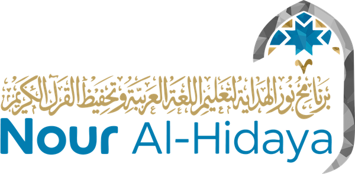
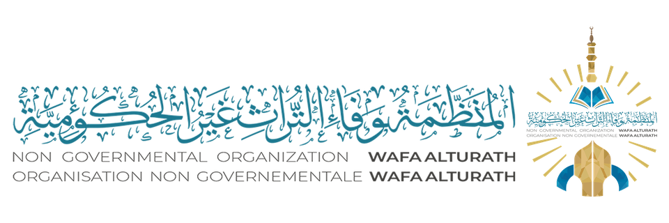
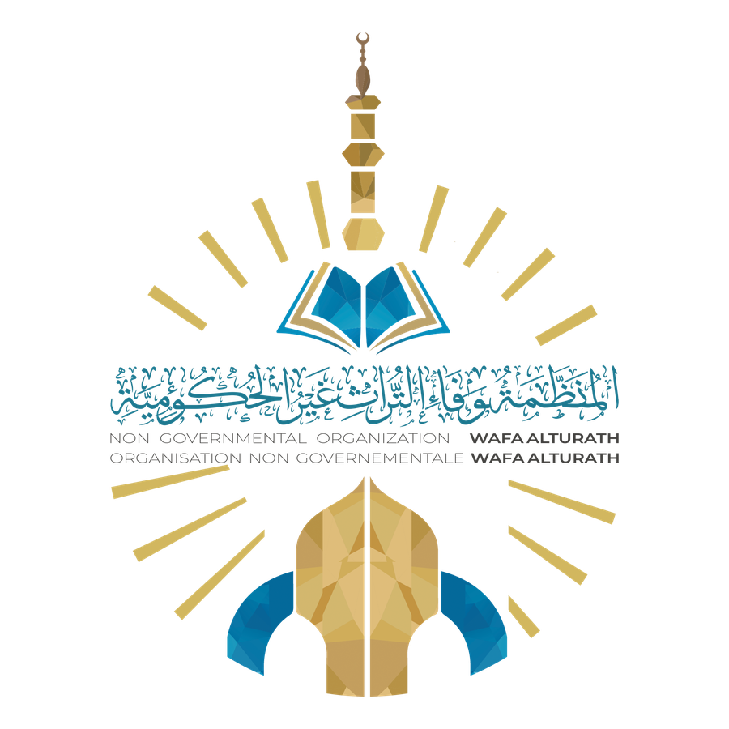
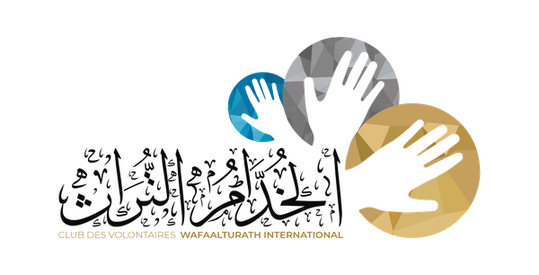

Nour Al-Hidaya
Un espace d’apprentissage du Coran, de la langue arabe et des connaissances islamiques.
Accéder à Nour Al-Hidaya
ONG Wafa Al-Turath · Bénin
Pour le développement des communautés à travers l’éducation, le bien-être social et la préservation du patrimoine islamique.

Notre mission
Organisation à but non lucratif, apolitique, humanitaire, sociale et spirituelle, enregistrée en République du Bénin. Elle œuvre pour le développement des communautés à travers l’éducation, le bien-être social et la préservation du patrimoine islamique.
Notre vision
Construire des communautés éclairées, épanouies et enracinées dans leurs valeurs, pour un développement durable et équitable.
Accès à l’éducation, formation et renforcement des capacités des populations vulnérables.
Actions humanitaires, soutien social, santé communautaire et développement durable.
Valorisation, documentation et transmission des valeurs culturelles et spirituelles islamiques.

Un espace d’apprentissage du Coran, de la langue arabe et des connaissances islamiques.
Accéder à Nour Al-Hidaya
Le club rassemble les bénévoles qui souhaitent contribuer aux actions de l’ONG.
Rejoindre le Club